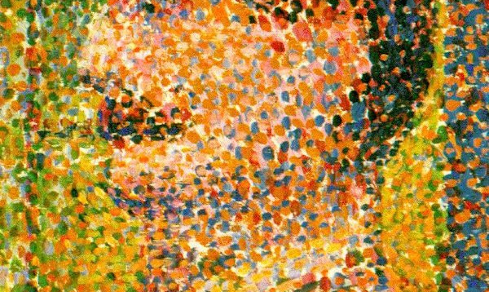
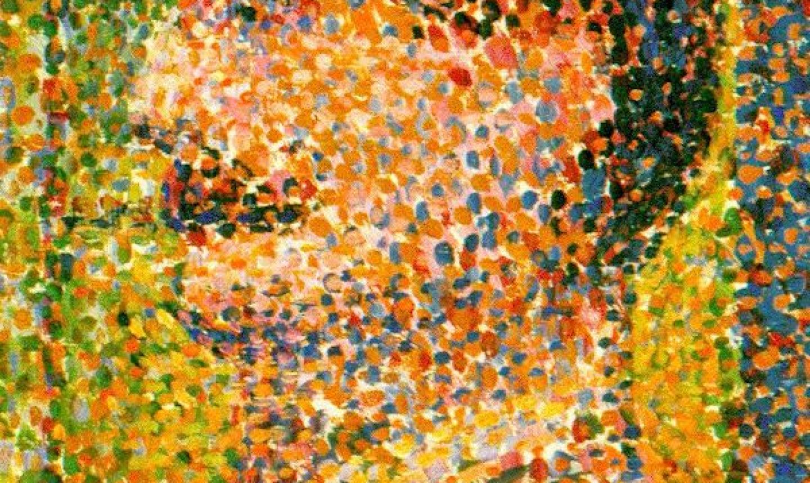
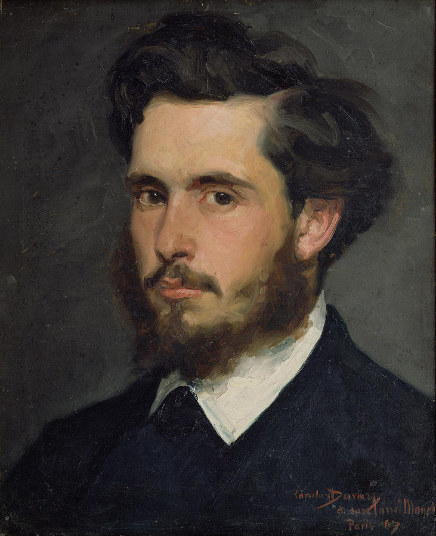
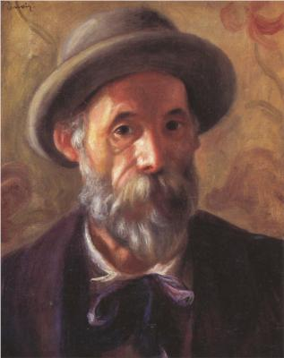
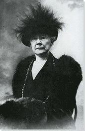
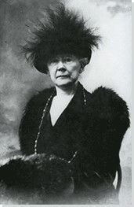

Impressionism was a movement that began in the 19th-century which utilized "relatively small, thin, yet visible brush strokes, open composition, emphasis on accurate depiction of light in its changed qualities (often accentuated the effects of the passage of time), ordinary subject matter, inclusion of movement as a crucial element of human perception and experience, and unusual visual angles." Impressionism originated with a group of Paris-based artists whose independent exhibitions brought them to prominence during the 1870s and 1880s. (MOMA)
Impressionists faced harsh opposition from the conventional art community in France. The name of the style derives from the title of a Claude Monet work, Impression, soleil levant (Impression, Sunrise), which provoked the critic Louis Leroy to coin the term in a satirical review published in the Parisian newspaper Le Charivari. (MOMA)
  
